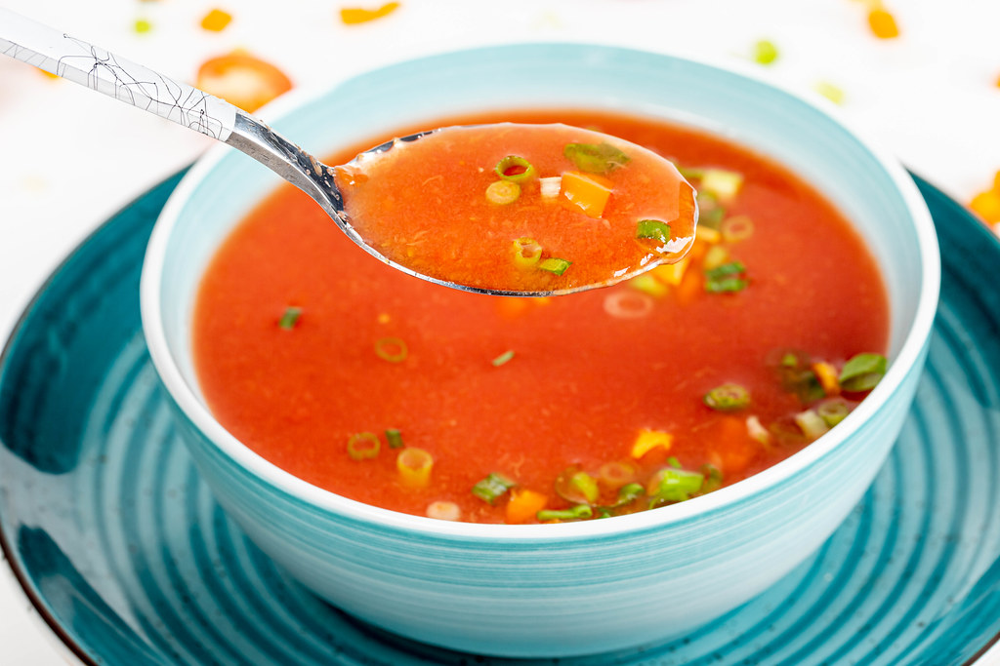

Tomato Soup

Description
With this recipe you will make a very simple tomato soup that is absolutely tasty and effortless to make
Ingredients:
- 4 tablespoons unsalted butter
- 1/2 large onion, cut into large wedges
- 1 (28-ounce) can tomatoes, we prefer to use whole peeled or crushed, see notes for fresh tomatoes
- 1 ½ cups water, low sodium vegetable stock, or chicken stock
- 1/2 teaspoon fine sea salt, or more to taste
Steps
- Melt butter over medium heat in a Dutch oven or large saucepan.
- Add onion wedges, water, can of tomatoes with their juices, and 1/2 teaspoon of salt. Bring to a simmer.
Cook, uncovered, for about 40 minutes.
Stir occasionally and add additional salt as needed.
- Blend the soup, and then season to taste.
Done! Enjoy your freshly cooked, delicious tomato soup.